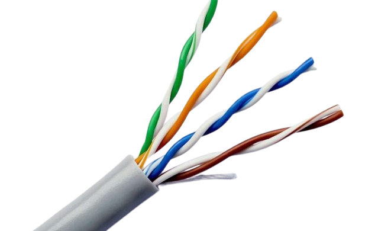

Pengertian Kabel Fiber Optik
Kabel fiber optik adalah salah satu jenis kabel yang terbuat dari serat kaca atau plastik halus yang digunakan untuk mentransmisikan sinyal cahaya. Dibandingkan dengan kabel tembaga yang menggunakan arus listrik untuk mentransmisikan data, fiber optik memanfaatkan cahaya, yang menawarkan kecepatan lebih tinggi dan lebih efisien dalam mentransmisikan informasi. Kabel fiber optik sangat cocok untuk transmisi data dalam jarak jauh karena dapat mengirimkan data tanpa ada penurunan kualitas yang signifikan. Keunggulannya dibandingkan kabel tembaga sangat jelas, terutama dalam hal bandwidth, keamanan data, serta kecepatan pengiriman informasi.
Penggunaan kabel fiber optik semakin meluas, mulai dari komunikasi jarak jauh, internet cepat, transmisi data melalui jaringan, hingga aplikasi medis dan ilmiah. Di dunia yang serba cepat dan membutuhkan pengolahan informasi yang efisien, fiber optik menjadi solusi utama dalam mendukung infrastruktur digital modern.
Sejarah Kabel Fiber Optik
Sejarah kabel fiber optik bermula pada tahun 1950-an, ketika para ilmuwan pertama kali menemukan prinsip dasar mengenai cahaya yang bisa dipantulkan dalam serat kaca. Pada saat itu, teknologi ini hanya sebatas teori dan percobaan laboratorium. Pada tahun 1970-an, kemajuan besar terjadi ketika para peneliti berhasil mengembangkan serat optik yang mampu mentransmisikan cahaya dengan kualitas tinggi dan efisiensi yang lebih baik. Pada tahun 1977, AT&T mulai menggunakan kabel fiber optik untuk komunikasi jarak jauh di Amerika Serikat. Sejak saat itu, kabel fiber optik terus berkembang dan akhirnya menjadi tulang punggung bagi infrastruktur komunikasi modern di seluruh dunia.
Inovasi dalam teknologi fiber optik tidak berhenti di situ. Pengembangan terus berlanjut untuk meningkatkan kapasitas dan efisiensi transmisi data. Dengan munculnya teknologi baru seperti 5G dan IoT (Internet of Things), kebutuhan akan kabel fiber optik semakin meningkat untuk memastikan kecepatan internet dan komunikasi yang optimal.
Struktur Kabel Fiber Optik
Kabel fiber optik memiliki struktur yang sangat berbeda dibandingkan dengan kabel tembaga tradisional. Berikut adalah komponen utama dari kabel fiber optik:
- Core (Inti): Bagian inti kabel yang terbuat dari serat kaca atau plastik dengan diameter sangat kecil. Inti ini adalah bagian yang paling penting karena cahaya yang membawa data mengalir melalui inti ini. Diameter core sangat kecil, bahkan bisa lebih kecil dari diameter rambut manusia, dan tergantung pada jenis kabel fiber optik yang digunakan.
- Cladding: Lapisan yang mengelilingi core dan berfungsi untuk memantulkan cahaya kembali ke dalam core. Cladding terbuat dari bahan dengan indeks bias yang lebih rendah dibandingkan dengan core, yang menjamin cahaya tetap berada di dalam core dan tidak bocor keluar.
- Coating: Lapisan pelindung yang melindungi serat kaca dari kerusakan fisik dan lingkungan. Coating ini juga membantu menjaga kualitas sinyal dengan melindungi core dari pengaruh kelembapan atau zat kontaminan lainnya.
- Strength Member: Elemen penguat yang memberikan kekuatan mekanik pada kabel untuk melindungi dari kerusakan akibat tarikan atau tekanan. Biasanya terbuat dari bahan komposit atau baja.
- Outer Jacket: Lapisan luar kabel yang memberikan perlindungan dari cuaca, kebakaran, atau kerusakan mekanis lainnya. Lapisan ini dapat terbuat dari bahan yang tahan api atau bahan kimia tertentu, untuk memastikan keselamatan dan daya tahan kabel saat digunakan di luar ruangan atau di lokasi yang lebih ekstrem.

Cara Menggunakan Kabel Fiber Optik
Penggunaan kabel fiber optik memerlukan perhatian khusus dalam hal instalasi dan pemeliharaan agar kinerjanya optimal. Berikut adalah beberapa langkah penting dalam menggunakan kabel fiber optik:
1. Persiapan dan Perencanaan Instalasi
Sebelum melakukan instalasi, penting untuk merencanakan dan menyiapkan area pemasangan kabel fiber optik. Hal ini mencakup menentukan rute kabel, mengidentifikasi potensi gangguan atau penghalang, dan memastikan kabel dipasang dengan aman. Anda juga harus memperhitungkan jenis kabel fiber optik yang sesuai (misalnya, single-mode atau multi-mode) berdasarkan jarak dan kebutuhan bandwidth.
2. Penggalian dan Penarikan Kabel
Untuk instalasi kabel fiber optik di luar ruangan, Anda mungkin perlu menggali saluran tanah atau menggunakan pipa pelindung untuk memastikan kabel terlindung dari kerusakan fisik. Di dalam gedung, kabel dapat dipasang di sepanjang dinding atau melalui pipa untuk menjaga kabel tetap aman dan terhindar dari kontak langsung yang bisa merusaknya.
3. Penyambungan Kabel Fiber Optik
Setelah kabel dipasang, langkah berikutnya adalah penyambungan antar kabel fiber optik. Penyambungan ini dapat dilakukan menggunakan dua metode utama:
- Penyambungan Splice: Metode ini menghubungkan dua ujung kabel dengan menggabungkan serat optik secara langsung, menggunakan teknik penyambungan khusus yang memastikan transmisi sinyal tanpa kehilangan kualitas.
- Konektor: Dalam beberapa kasus, kabel fiber optik dapat disambungkan menggunakan konektor optik yang dirancang khusus untuk menyambungkan dua serat. Konektor ini memungkinkan pemasangan yang lebih cepat dan lebih fleksibel tanpa membutuhkan peralatan penyambungan khusus.
4. Pengujian Kinerja Kabel
Setelah kabel dipasang dan disambungkan, penting untuk menguji kinerja kabel fiber optik menggunakan alat uji khusus, seperti Optical Time Domain Reflectometer (OTDR), untuk memastikan sinyal dapat diteruskan dengan baik dan tidak ada kerusakan pada kabel yang dapat mengurangi kualitas transmisi.
5. Pemeliharaan dan Perawatan Kabel Fiber Optik
Untuk memastikan kabel fiber optik tetap berfungsi dengan baik dalam jangka panjang, perawatan dan pemeliharaan rutin sangat penting. Beberapa langkah pemeliharaan meliputi:
- Penghindaran Kerusakan Fisik: Pastikan kabel tidak tertarik, tertekuk, atau terpapar suhu ekstrem yang dapat merusaknya. Gunakan pelindung tambahan jika perlu.
- Pembersihan Konektor: Konektor fiber optik harus dibersihkan secara berkala untuk mencegah debu atau kotoran yang dapat mengganggu transmisi sinyal.
- Pengecekan Kinerja Secara Berkala: Lakukan pengujian kinerja secara rutin menggunakan alat uji fiber optik untuk memastikan tidak ada penurunan kualitas sinyal dan kabel berfungsi dengan baik.
6. Penanganan Kabel Fiber Optik
Penanganan kabel fiber optik harus dilakukan dengan hati-hati karena kabel ini sangat sensitif terhadap kerusakan fisik. Beberapa langkah yang dapat diambil untuk menangani kabel dengan benar adalah:
- Hindari Tekanan Berlebih: Jangan menekuk atau memberi tekanan berlebih pada kabel, karena dapat merusak serat di dalamnya.
- Gunakan Alat yang Tepat: Gunakan alat pemotong dan penyambung yang dirancang khusus untuk kabel fiber optik, karena penggunaan alat yang salah dapat merusak kabel atau mengurangi kualitas sinyal.
- Pengemasan yang Tepat: Jika kabel perlu dipindahkan atau disimpan, pastikan untuk menggulung kabel dengan hati-hati tanpa membuatnya kusut atau tertekuk tajam.
Dengan mengikuti prosedur ini, kabel fiber optik akan memberikan kinerja yang maksimal dalam mendukung komunikasi data berkecepatan tinggi dan berkapasitas besar.
Kelebihan dan Kekurangan Kabel Fiber Optik
Kelebihan
Kabel fiber optik memiliki banyak kelebihan yang menjadikannya lebih unggul dibandingkan dengan kabel tembaga tradisional:
- Kecepatan Transfer Data Tinggi: Kabel fiber optik mampu mentransmisikan data dengan kecepatan yang sangat tinggi, bahkan dapat mencapai lebih dari 100 Gbps, sangat cocok untuk kebutuhan komunikasi internet berkecepatan tinggi.
- Jarak Jauh Tanpa Penurunan Kualitas: Sinyal yang dikirimkan melalui kabel fiber optik tidak mengalami penurunan kualitas meskipun transmisi dilakukan dalam jarak yang jauh. Berbeda dengan kabel tembaga, kualitas sinyal dalam fiber optik tetap stabil seiring bertambahnya jarak.
- Tahan Terhadap Gangguan Elektromagnetik: Kabel fiber optik tidak terpengaruh oleh gangguan elektromagnetik, yang membuatnya lebih stabil dalam kondisi lingkungan yang penuh dengan interferensi dari peralatan elektronik.
- Kapasitas Bandwidth yang Lebih Besar: Kabel fiber optik memiliki kapasitas bandwidth yang sangat besar, memungkinkan transmisi data dalam jumlah besar tanpa mengurangi kecepatan pengiriman.
Kekurangan
Meskipun banyak kelebihan, kabel fiber optik juga memiliki beberapa kekurangan:
- Biaya Pemasangan yang Tinggi: Proses instalasi dan pemeliharaan kabel fiber optik memerlukan biaya yang lebih tinggi dibandingkan dengan kabel tembaga. Hal ini disebabkan oleh harga bahan yang lebih mahal dan kebutuhan untuk teknisi terlatih.
- Kerapuhan Serat: Kabel fiber optik terbuat dari serat kaca yang cukup rapuh. Jika kabel tidak dipasang dengan hati-hati, serat ini dapat patah atau rusak, yang mengharuskan penggantian kabel baru.
- Kebutuhan Teknisi Terlatih: Instalasi dan pemeliharaan kabel fiber optik memerlukan teknisi yang memiliki keahlian khusus karena serat optik sangat sensitif dan instalasi yang salah dapat merusak kabel atau mempengaruhi kualitas sinyal.
Aplikasi Kabel Fiber Optik
Kabel fiber optik memiliki banyak aplikasi dalam berbagai bidang, yang membuatnya sangat penting dalam dunia modern. Berikut adalah beberapa aplikasi utama kabel fiber optik:
- Internet dan Jaringan Komunikasi: Fiber optik digunakan sebagai tulang punggung untuk infrastruktur jaringan internet global, memungkinkan transmisi data dengan kecepatan tinggi dan kapasitas bandwidth yang besar.
- Telekomunikasi: Kabel fiber optik digunakan dalam sistem telekomunikasi, termasuk jaringan telepon dan internet, serta teknologi baru seperti jaringan 5G yang membutuhkan kapasitas besar untuk pengiriman data.
- TV Kabel dan Siaran Satelit: Banyak operator TV kabel menggunakan kabel fiber optik untuk mentransmisikan sinyal TV berkualitas tinggi kepada pengguna, karena kabel fiber lebih stabil dan tidak terpengaruh oleh gangguan elektromagnetik.
- Bidang Medis: Fiber optik juga digunakan dalam peralatan medis, seperti endoskopi dan alat medis lainnya yang memanfaatkan pencahayaan dan gambar berkualitas tinggi untuk diagnosa medis tanpa pembedahan.
- Sensor dan Pengukuran: Kabel fiber optik juga digunakan dalam berbagai aplikasi sensor untuk mendeteksi suhu, tekanan, atau kondisi lain dalam penelitian ilmiah dan industri, karena kemampuannya dalam mentransmisikan data dengan akurasi tinggi.
Kisah Sultan Rif'at Alfatih yang Terkena Kecelakaan Kabel Fiber Optik
Sultan Rif'at Alfatih, seorang mahasiswa berusia 20 tahun, mengalami kecelakaan tragis di Jalan Pangeran Antasari, Jakarta Selatan. Kejadian bermula saat dia berjalan di trotoar dan tiba-tiba terjerat kabel fiber optik yang terpasang sembarangan di jalan. Kabel tersebut menekan tenggorokan Sultan, menghalangi pernapasannya dan menyebabkan dia kesulitan bernapas. Dalam situasi yang sangat kritis, Sultan harus menggunakan alat bantu pernapasan yang dipasang di lehernya untuk bertahan hidup.
Kondisi Sultan yang semakin memburuk membuat para pejalan kaki sekitar segera memberi pertolongan pertama. Keadaan semakin genting, dan bantuan medis segera dipanggil. Pihak berwenang yang tiba di lokasi langsung mengamankan kabel fiber optik yang menjadi penyebab insiden tersebut. Sultan dibawa ke rumah sakit terdekat, di mana dokter menyatakan bahwa insiden tersebut bisa berakibat fatal jika tidak segera ditangani.
Kecelakaan ini mengejutkan banyak pihak, karena kabel fiber optik yang seharusnya menjadi bagian dari infrastruktur modern justru menjadi penyebab bahaya. Kasus ini menunjukkan betapa pentingnya pengawasan dan perencanaan yang baik dalam pemasangan kabel dan infrastruktur lainnya di jalan raya. Kejadian ini menjadi peringatan bahwa infrastruktur yang tidak dikelola dengan baik bisa membahayakan keselamatan publik.
Sultan Rif'at Alfatih, yang sebelumnya penuh harapan dan semangat, harus berjuang untuk menjalani kehidupan sehari-hari dengan alat bantu pernapasan. Insiden ini menyoroti pentingnya keselamatan dalam pembangunan infrastruktur, terutama yang melibatkan kabel atau fasilitas lainnya yang terpasang di ruang publik. Kasus Sultan menjadi peringatan bagi pihak berwenang dan masyarakat untuk lebih berhati-hati dan memastikan keamanan infrastruktur yang ada.
Masalah Sampah Kabel Fiber Optik
Solusi Masalah Sampah Kabel Fiber Optik
Untuk mengurangi dampak negatif dari limbah kabel fiber optik, beberapa langkah dapat diambil:
- Pendidikan dan Kesadaran Lingkungan:Mengedukasi para pekerja yang terlibat dalam pemasangan dan pemeliharaan kabel fiber optik mengenai pentingnya pengelolaan limbah yang bertanggung jawab. Ini mencakup pemahaman tentang cara membuang, mendaur ulang, dan mengelola kabel dengan benar.
- Pengembangan Infrastruktur Daur Ulang: Mendirikan fasilitas daur ulang yang dirancang khusus untuk menangani kabel fiber optik. Fasilitas ini akan dilengkapi dengan peralatan yang mampu memisahkan dan mendaur ulang komponen-komponen kabel dengan efisien.
- Desain Kabel yang Ramah Lingkungan:Mengembangkan kabel fiber optik yang menggunakan bahan pelindung atau pelapis yang lebih ramah lingkungan dan mudah didaur ulang. Misalnya, penggunaan plastik biodegradable atau bahan alternatif yang lebih mudah terurai.
- Pengelolaan Sampah yang Efektif: Menyediakan tempat pembuangan sampah khusus untuk limbah elektronik, termasuk kabel fiber optik, di area proyek dan fasilitas umum. Ini akan memastikan kabel yang tidak terpakai atau rusak dapat dibuang dengan benar dan diproses lebih lanjut. Dalam proyek pemasangan fiber optik besar, perusahaan bisa memasang sistem pengumpulan limbah yang efisien untuk mengumpulkan dan mengelola kabel yang terbuang, sehingga mengurangi dampaknya terhadap lingkungan.
- Peningkatan Teknologi Pengolahan LimbahPenelitian dan pengembangan teknologi baru yang dapat mempercepat proses pemisahan dan pemrosesan kabel fiber optik. Misalnya, menggunakan teknik pemrosesan otomatis atau robotik yang lebih efisien dalam mendaur ulang komponen kabel. dan Menerapkan prinsip kimia ramah lingkungan untuk mengurangi limbah kimia yang dihasilkan selama proses daur ulang kabel fiber optik.
- Sistem Pengelolaan Sampah Berbasis KebijakanPemerintah dapat mengeluarkan regulasi yang mengatur pengelolaan limbah kabel fiber optik, seperti mewajibkan perusahaan untuk melakukan daur ulang kabel yang rusak atau tidak terpakai dan memberikan insentif bagi mereka yang mengimplementasikan pengelolaan limbah yang baik. Menegakkan hukum dan peraturan terkait pembuangan limbah elektronik yang tidak sesuai. Misalnya, memberikan denda bagi perusahaan yang tidak mengikuti prosedur pembuangan limbah yang ramah lingkungan.
- Pengurangan LimbahUntuk mengurangi jumlah sampah fiber optik, perencanaan yang cermat dan penggunaan fiber optik yang tepat dapat membantu. Misalnya, meminimalkan pemotongan serat optik yang tidak perlu atau menggunakan sistem fiber yang lebih tahan lama.
- Pemrosesan Limbah ElektronikSerat optik sering kali tercampur dengan perangkat elektronik lain. Pusat pengolahan limbah elektronik (e-waste) dapat membantu dalam pengelolaan limbah fiber optik dengan cara memisahkan dan mengolah material secara aman.
Kesimpulan
Kabel fiber optik telah merevolusi cara kita mengirimkan data dan komunikasi. Dengan kecepatan tinggi, kapasitas besar, dan ketahanan terhadap gangguan elektromagnetik, fiber optik merupakan solusi ideal untuk jaringan komunikasi modern. Seiring dengan berkembangnya teknologi, penggunaan kabel fiber optik akan terus meningkat, baik dalam aplikasi komunikasi, medis, industri, maupun bidang penelitian ilmiah.
Namun, masalah pengelolaan limbah dan kebutuhan akan tenaga teknisi yang terlatih tetap menjadi tantangan besar. Oleh karena itu, pengembangan solusi untuk masalah limbah, seperti daur ulang dan penggunaan material ramah lingkungan, sangat penting untuk memastikan keberlanjutan penggunaan kabel fiber optik di masa depan.